ホーム < ゲームつくろー！ < Unity/カスタムエディタ編
カスタムエディタ編
その１ Inspectorが変わる！
UnityのGameObjectにスクリプトをくっつけると、そのGameObjectが機能を持つようになります。そして、その機能を調節するパラメータがInspector上に表示されます。例えば、ワールドに球を沢山発生させるジェネレータを作るとしましょう。ObjectGeneratorというスクリプトに「freq」という発生頻度を調節するメンバ変数をpublicで作り、このスクリプトをGameObjectにくっつけると、Inspectorはこう表示されます：
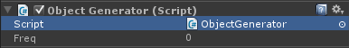
まぁ、もちろんこのFreqに何らかの値を与えればいいわけですが、このままだとどんな値でも入ってしまいます。頻度なのにマイナス値も入れられますし、とんでもなく大きな値も可能です。例えばこの数値が1秒間あたりに出現するオブジェクトの数だとして、1億とか入れるとPCごと落ちるかもしれません。要は「ObjectGeneratorが許容する範囲」をこのGUIだと制御出来ないわけです。
Unityにはこういう時のためにエディタ内の一部をカスタマイズする「カスタムエディタ」機能があります。その中でInspectorの表示を変えるのが「カスタムインスペクタ」です。
① カスタムインスペクタでFreqを範囲指定に
カスタムインスペクタは実際に使ってみるのが一番分かりやすいと思いますので、冒頭のObjectGeneratorのfreq値を特定の範囲に設定できるようにしてみましょう。
まず、UnityのAssets内に「Editor」というフォルダを作成します。このフォルダ名は特別な扱いになっていて、ここにカスタムエディタ用のスクリプトを入れるとそれが機能するようになります：
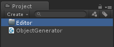
次にObjectGeneratorのInspectorをカスタマイズする専用のスクリプトを新規に作ります。名前は何でも良いのですが「ObjectGeneratorEditor」としておきましょう。作り方は通常のスクリプト追加と同じで、Editorフォルダ内で右クリックして[Create]→[C# Script]です：
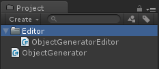
出来たObjectGeneratorEditorを次に編集します。
using UnityEngine;
using System.Collections;
using UnityEditor;
[CustomEditor( typeof(ObjectGenerator) )]
public class ObjectGeneratorEditor : Editor {
}
太文字の所がポイントです。カスタムエディタに関するクラスはUnityEditorにまとめられているので「using UnityEditor」で名前解決しておきます。
次にクラスの直前に「[CustomEditor(type)]」という記述をします。これはC#の「属性（Attribute)」という機能を利用しています。属性はそのクラスの機能を使用者に明記したり、コンパイラに特殊な指示を与える時に使います。CustomEditor属性の引数にはインスペクタを変更したいクラスの名前（Type）を指定します。
最後に作ったクラスをカスタムエディタ用にするため、Editorクラスを継承するように変更します。
この段階でUnity側に行くとカスタムエディタのビルドが回ります。カスタムエディタは普通のプログラムの前にビルドされるんです。エラーが出ない事を確認しておきましょう。
インスペクタの変更は「OnInspectorGUIメソッド」の中で行います。今やりたい事はObjectGeneratorのfreq値を範囲指定する事です。コードを記述するとこういう感じになります：
using UnityEngine;
using System.Collections;
using UnityEditor;
[CustomEditor( typeof(ObjectGenerator) )]
public class ObjectGeneratorEditor : Editor {
public override void OnInspectorGUI() {
ObjectGenerator obj = target as ObjectGenerator;
obj.freq = EditorGUILayout.Slider( "Frequency", obj.freq, 0.0f, 10.0f );
EditorUtility.SetDirty( target );
}
}
OnInspectorGUIメソッドは仮想関数なのでそれをoverride（上書き）します。
まず、対象となるObjectGenerator自体を取得します。これはEditorクラス内の「target」というメンバ変数がそれを担っています。しかしtargetはobject型（何にでもなれる型）になっているのでObjectGeneratorにキャストします。
カスタムインスペクタのGUIは「EditorGUILayout」等でInspector上に並べる事が出来ます。今回は数値の範囲していなので「Slider（スライダー）」を使う事にしましょう。Sliderの第1引数にはそのスライダーの名前を記述します。第2引数には現在の値を入れます。第3、4引数にはスライダーの範囲を指定します。
最後にEditorUtility.SetDirtyというメソッドにtargetを渡しています。このメソッドは変更のあったInspector上のGUIを変更してくれます。
このカスタムインスペクタのコードをビルドすると、ObjectGeneratorをアタッチしたGameObjectのInspectorは次のように変わります：
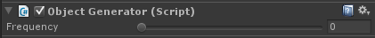
スライダーになりました～(^-^)/。指定した0～10の範囲にちゃんと制限されています。このように、特定のスクリプトのInspectorをより分かりやすく安全なGUIに変更できるんです。
② EditorGUILayoutの種類
上の例で出てきた「EditorGUILayout」というクラス。この人は各種GUIを提供してくれるだけでなく、宣言した順番にInspector上にGUIを並べてくれるというとても便利な能力も持っています。EditorGUILayoutがどのようなカスタムインスペクタを持っているか、一挙にだだ～っと見て行く事にしましょう。
○ BoundsField
中心点とXYZ軸平行のサイズを指定するフィールドです：
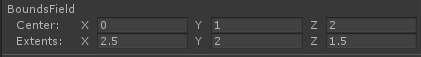
obj.bound = EditorGUILayout.BoundsField( "BoundsField", obj.bound );
obj.boundはBounds型の変数です。Bounds型は軸平行な直方体を表現するのに使われます。
○ Color
RGBA色をカラーピッカーで設定するフィールドです：
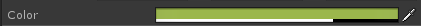
obj.color = EditorGUILayout.ColorField( "Color", obj.color );
obj.colorはColor型の変数です。
○ AnimationCurve
時間軸等に対応したカーブ値を設定できるフィールドです：
obj.animationCurve = EditorGUILayout.CurveField( "CurveField", obj.animationCurve );
obj.animationCurveはAnimationCurve型のオブジェクトです。例えば2秒での値を取得したい時は、
float val = animationCurve.Evaluate( 2.0f );
などとします。ちょっとした時間変化する値を作りたい時に重宝しますね。
○ EnumMaskField
列挙型を複数選択する事ができるフィールドです：
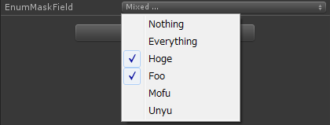
obj.enumMask = (ObjectGenerator.EnumHoge)EditorGUILayout.EnumMaskField( "EnumMaskField", obj.enumMask );
obj.enumMaskは自分で作成する任意の列挙型の値です。ただし、この列挙型は「ビットマスク」になっている必要があります。つまり：
public enum EnumHoge {
Hoge = 1,
Foo = 2,
Mofu = 4,
Unyu = 8,
}
上のように列挙型に2のべき乗の数値を指定します。こうする事で、例えば、
if ( obj.enumMask & (EnumHoge.Foo | EnumHoge.Mofu) ) {
// FooとMofuがONだった
}
のように立っているビットに対応した振る舞いを記述できます。
○ EnumPopup
EnumMaskFieldに対し、EnumPopupは列挙型を一つだけ選択できるフィールドです：
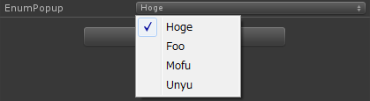
obj.enumMask2 = (ObjectGenerator.EnumHoge)EditorGUILayout.EnumPopup( "EnumPopup", obj.enumMask2 );
○ FloatField
1つの浮動小数点を設定できるフィールドです：
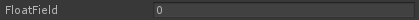
obj.floatField = EditorGUILayout.FloatField( "FloatField", obj.floatField );
○ Foldout
項目を出したり折りたたんだりする時に使います：
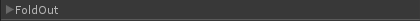
foldoutがfalse
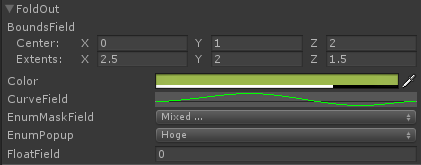
foldoutがtrue
obj.foldOut = EditorGUILayout.Foldout( obj.foldOut, "FoldOut" );
if ( obj.foldOut == true ) {
obj.boundField = EditorGUILayout.BoundsField( "BoundsField", obj.boundField );
obj.color = EditorGUILayout.ColorField( "Color", obj.color );
obj.animationCurve = EditorGUILayout.CurveField( "CurveField", obj.animationCurve );
obj.enumMask = (ObjectGenerator.EnumHoge)EditorGUILayout.EnumMaskField( "EnumMaskField", obj.enumMask );
obj.enumMask2 = (ObjectGenerator.EnumHoge)EditorGUILayout.EnumPopup( "EnumPopup", obj.enumMask2 );
obj.floatField = EditorGUILayout.FloatField( "FloatField", obj.floatField );
}
Inspector内に項目がずらっと並んでいると時に見づらい事があります。そういう時にFoldoutを使うと項目を一まとめに出したり折りたたんだり出来ます。実際は上のようにfoldoutがtrueの時に出したい項目を通すだけです(^-^;
○ HelpBox
Inspector内に注釈（Help）を表示します：
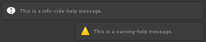
EditorGUILayout.HelpBox( "This is a info-wide-help message.", MessageType.Info, true );
EditorGUILayout.HelpBox( "This is a warning-help message.", MessageType.Warning, false );
HelpBoxにはNone, Info, Warning, Errorの4種類があり、ボックスの幅をwideにするか通常にするか選択もできます。
○ IntField
1つの整数値を設定するフィールドです：
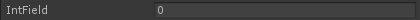
obj.intField = EditorGUILayout.IntField( "IntField", obj.intField );
整数用のため、小数点や文字列などは入力できないようになっています。
○ IntPopup
整数に対応した文字列をポップアップで選択するフィールドです：
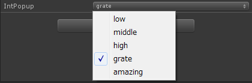
obj.intPopup = EditorGUILayout.IntPopup( "IntPopup", obj.intPopup, obj.intPopupName, obj.intPopupAry );
一見すると列挙型の選択のようなのですが、各文字列に対応した数値が内部で設定されています。第3引数にポップアップで出す文字列の配列、第4引数にその文字列に対応した整数配列をそれぞれ渡します。
○ IntSlider
整数値のスライダーです：
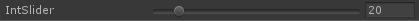
obj.intSlider = EditorGUILayout.IntSlider( "IntSlider", obj.intSlider, 10, 100 );
スライダーの整数値版です。第3引数に最小値、第4引数に最大値を指定します。
○ LabelField
Inspector上に文字を表示します：
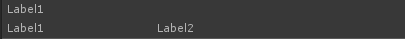
EditorGUILayout.LabelField( "Label1" );
EditorGUILayout.LabelField( "Label1", "Label2" );
第1引数に文字列を渡すと上のように単純にその文字列が表示されます。第2引数にも文字列を渡すと下のようにサブラベルが表示されます。
○ LayerField
UnityのLayerをポップアップで表示します：
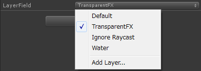
obj.layerField = EditorGUILayout.LayerField( "LayerField", obj.layerField );
Layersにある[Editer Layer]を選択した時にでるレイヤー設定画面で設定したレイヤータイプがポップアップで表示されます。選択するとobj.layerFieldにそのレイヤーのIDが代入されます。レイヤーを選択して何かしたい時に使えます。
○ MaskField
文字列の配列をビット値に見立てた複数選択ポップアップを表示します：
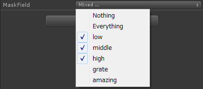
obj.maskField = EditorGUILayout.MaskField( "MaskField", obj.maskField, obj.maskFieldNames );
第3引数に文字列の配列を渡すと、要素の順番にその文字列に1,2,4,8...とビット値を割り振ってくれます。戻り値は選択した文字列に対応したビット値です。例えば上の場合だと00111なので7が返ります。
○ MinMaxSlider
min～maxまでの範囲指定ができるスライダーです：
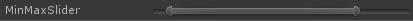
EditorGUILayout.MinMaxSlider( new GUIContent("MinMaxSlider"), ref obj.minValue, ref obj.maxValue, 0.0f, 10.0f );
第2、第3引数に現在の最小値、最大値を「ref（参照）」で渡します。スライダーに変化があった時にはここにその結果が返ります。第4、第5引数はそれぞれ最小と最大の限界値を指定します。
○ ObjectField
UnityObjectをドラッグ&ドロップで設定できるフィールドです：
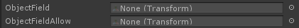
obj.objectField = (Transform)EditorGUILayout.ObjectField( "ObjectField", obj.objectField, typeof( Transform ), false );
obj.objectFieldAllow = (Transform)EditorGUILayout.ObjectField( "ObjectFieldAllow", obj.objectFieldAllow, typeof( Transform ), true );
第3引数に渡せるオブジェクトのTypeを指定します。ポイントは第4引数の「allowSceneObjects」フラグです。ここをtrueにすると、ヒエラルキーにあるGameObjectをドロップする事が可能になります。一方falseにするとヒエラルキー内のGameObjectを受け付けず、Projectにあるプレハブ等のリソースのみ受け付けるようになります。Unityはヒエラルキー上での関連をあまり推奨していないので、このフラグを基本falseに設定して関連を保護するのが大切になります。
第3引数の型によってフォームの形や受け入れるアイコンなども変わります：
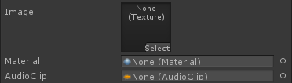
obj.texture = (Texture)EditorGUILayout.ObjectField( "Image", obj.texture, typeof(Texture), false );
obj.material = (Material)EditorGUILayout.ObjectField( "Material", obj.material, typeof(Material), false );
obj.audioClip = (AudioClip)EditorGUILayout.ObjectField( "AudioClip", obj.audioClip, typeof(AudioClip), false );
良く出来てます^^
○ PasswordField
パスワード入力用の伏字なフィールドです：
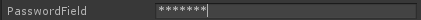
obj.password = EditorGUILayout.PasswordField( "PasswordField", obj.password );
これ、使い道が良く分かりません(^-^;
○ Popup
いわゆるリストと同じでポップアップウィンドウから項目を一つ選択するフィールドです：
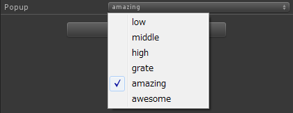
obj.popupSelectIndex = EditorGUILayout.Popup( "Popup", obj.popupSelectIndex, obj.popupSelectNames );
第2引数には選択されている項目のインデックス番号を渡します。第3引数は選択項目の文字列配列です。
○ PrefixLabel
Labelと基本的に同じですが、GUIをくっつける事ができます：
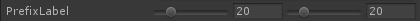
EditorGUILayout.BeginHorizontal();
EditorGUILayout.PrefixLabel( "PrefixLabel" );
obj.intSlider2 = EditorGUILayout.IntSlider( obj.intSlider2, 0, 100 );
obj.intSlider3 = EditorGUILayout.IntSlider( obj.intSlider3, 0, 100 );
EditorGUILayout.EndHorizontal();
典型的な使い方は上のコードのようにラベルとGUIを別々に定義する時などです。無理して使わなくても良いかもしれません(^-^;
○ PropertyField
…よぐわがんね(-_-;
○ RectField
長方形を設定するフィールドです：
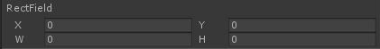
obj.rectField = EditorGUILayout.RectField( "RectField", obj.rectField );
obj.rectFieldはRect型の変数で、上の図にあるようにx,y,width,heightの4つの要素で長方形を表現します。
○ SelectableLabel
選択可能なラベルを設定できます：
EditorGUILayout.SelectableLabel( "SelectableLabel" );
上の図のように選択してコピーできます。んー、どう使うのかな(^-^;
○ Separator
間を開けます：
EditorGUILayout.LabelField( "Label" );
EditorGUILayout.LabelField( "Label" );
EditorGUILayout.LabelField( "Label" );
EditorGUILayout.Separator();
EditorGUILayout.LabelField( "Label" );
EditorGUILayout.LabelField( "Label" );
…間、空いてますよね(^-^;
○ Slider
2つの値の間を設定するスライダーを設置します：
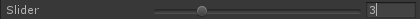
obj.slider = EditorGUILayout.Slider( "Slider", obj.slider, 1.0f, 10.0f );
第2引数に現在の値、第3、4引数に最小値と最大値を設定します。
○ Space
間を開けます：
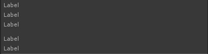
EditorGUILayout.LabelField( "Label" );
EditorGUILayout.LabelField( "Label" );
EditorGUILayout.LabelField( "Label" );
EditorGUILayout.Space();
EditorGUILayout.LabelField( "Label" );
EditorGUILayout.LabelField( "Label" );
…間、空いてますよね(^-^;;
○ TagField
Tagを設定するフィールドです：
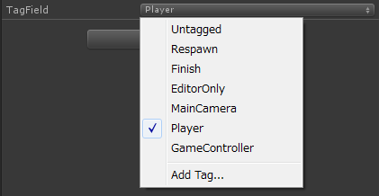
obj.tagField = EditorGUILayout.TagField( "TagField", obj.tagField );
obj.tagFieldはstring型です。Layerと違いTagは文字列で種類を識別します。自分のTagはInspectorにデフォルトで設定する所がありますので、これはもっぱら別目的で使われる物と思われます。
○ TextArea
文字列を自由に書き込めるフィールドです：
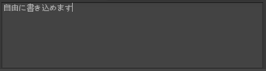
obj.textArea = EditorGUILayout.TextArea( obj.textArea, GUILayout.Height(96.0f) );
obj.textAreaはもちろんstring型です。このメソッドにはラベルを引数に取れるタイプがありませんので注意して下さい。第2引数にレイアウトオプションを渡すと上のように複数行のテキストエリアにできます。
○ TextField
1行テキストを書き込めるフィールドです：
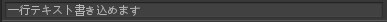
obj.textField = EditorGUILayout.TextField( obj.textField );
obj.textFieldはstring型です。このフィールドは改行を入れる事ができません。
○ Toggle
On/Offを切り替えるいわゆるトグルボタンです：
obj.toggle = EditorGUILayout.Toggle( "Toggle", obj.toggle );
obj.toggleはbool型です。
○ Vector2Field, Vector3Field, Vector4Field
2,3,4成分のベクトルを記入できるフィールドです：
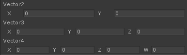
obj.vector2 = EditorGUILayout.Vector2Field( "Vector2", obj.vector2 );
obj.vector3 = EditorGUILayout.Vector3Field( "Vector3", obj.vector3 );
obj.vector4 = EditorGUILayout.Vector4Field( "Vector4", obj.vector4 );
obj.vector2、3、4はそれぞれVector2、Vector3、Vector4型です。
これらのフォームをInspectorに配置する事で、GameObjectをよりGUIベースで作り込んでいく事ができるようになります。